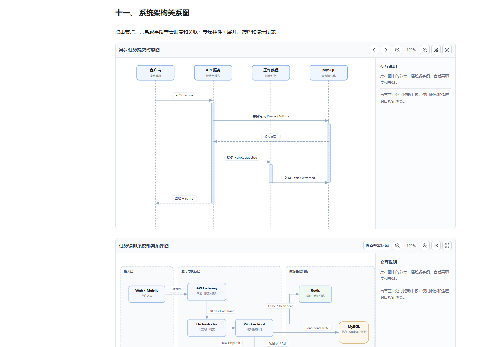

GEN-UI / 可交互报告示例 · 模拟数据
GEN-UI / 可交互报告示例 · 模拟数据
工程质量分析
报告生成时间
 一、执行概览
一、执行概览
- 全部记录
- —
- 成功
- —
- 失败
- —
- 待处理
- —
- 超过耗时阈值
- —
关键结论：指标、图表与执行明细必须来自同一份筛选数据集，避免统计口径不一致。
⚠️ 待确认：本示例使用模拟数据；真实项目报告必须先核实数据来源和测试范围。
- ✅统一主题与字号检查
- ⏳对目标项目执行真实压测
- ⏸️等待测试环境授权后继续
拖动平移 · ＋/− 缩放 · 0 适应窗口 · Esc 退出全屏
先看整体，再核对明细
所有指标、图表和记录来自同一份筛选结果。先确认成功与失败分布，再按模块、批次和耗时定位具体问题。
示例数据仅在当前页面临时生效，不会发送网络请求。
 二、趋势与分布
二、趋势与分布
2.2 模块对比 · 柱状图
2.3 批次走势 · 折线图
 三、执行明细
三、执行明细
| 任务编号（固定） | 所属模块 | 执行状态 | 耗时（毫秒） | 执行批次 | 操作 |
|---|
可左右滚动查看完整列；长文本保留省略号，鼠标移入或键盘聚焦时显示完整内容。最后一页允许少于所选每页条数。
筛选与查看规则
编号支持模糊搜索；模块、状态和批次分别对应表格关键字段；阈值筛选与所有统计及图表实时联动。
筛选说明用于查看当前报告的字段口径与操作规则，不会改变原始数据。
{
"version": "gen-ui-html-report/v1",
"title": "工程质量分析",
"rows": []
}四、AI 回答的信息重构案例
示例均为虚构场景，不代表已审计或已执行GEN-UI 首先解决文字墙、重点不明确、阅读顺序混乱、事实与计划混杂，然后才根据宿主能力决定是否使用图表与交互。以下案例展示从普通 AI 回答到可读工程信息的完整路径。
4.1 结论优先：把一段文字墙改成三层信息
原始回答（反例）
线程池需要考虑 CPU 核数、任务类型、最大线程数、队列长度、拒绝策略和超时时间，还需要考虑各种运行环境、应用程序的性能指标以及运行时的资源情况。不同场景配置不同，最终需要做一些测试和调整……
结构化回答
结论：优先使用有界队列和明确拒绝策略，线程数必须结合负载压测确定。
核心依据：CPU 密集与阻塞型任务的资源瓶颈不同；队列积压会直接影响尾延迟。
下一步：先记录 P95/P99、队列等待与 CPU 使用率，再按实际负载调参。
❓ 需要确认：当前任务是 CPU 密集还是 IO 密集？该信息决定线程池容量估算方法，不能直接从通用公式推断生产配置。
4.2 方案对比：让读者直接看到取舍
| 方案 | 优点 | 主要代价 | 建议场景 |
|---|---|---|---|
| 同步 HTTP | 链路直观 | 超时与连接生命周期受限 | 短耗时且可预测的调用 |
| MQ + Worker | 解耦执行 | 需要幂等与重试机制 | 独立后台任务 |
| 持久化工作流 | 支持依赖、断点恢复与证据追踪 | 编排和状态机复杂度更高 | 多阶段 AI 内容生产 |
推荐方向：对于需要长期运行、可恢复的多阶段流程，优先考虑持久化工作流。具体选型仍取决于真实 SLA 和故障成本。
4.3 步骤与流程：用可执行顺序替代散乱叙述
- 识别输入：检查需求、已有代码与约束。
- 确定边界：列出本次涉及的模块与不改动范围。
- 执行变更：小步实现并记录影响。
- 核验证据：运行明确的测试并区分已完成与未验证事项。
上方的内嵌 SVG 工程流程图演示了可缩放、平移、全屏与文字说明的流程表达；缺少浏览器能力时应回退到上述编号步骤。
4.4 代码评审：按严重程度、证据和行动分组
| 级别 | 位置（虚构） | 风险 | 整改 |
|---|---|---|---|
| 高 | JobWorker.java:88 | 租约失效后旧进程仍能更新结果 | 使用 fencing token 做条件更新 |
| 中 | JobWorker.java:121 | 执行权丢失与临时故障混用同一异常码 | 拆分 Attempt 错误分类 |
证据推演：假设锁租约为 30 秒而任务耗时 45 秒，旧 Worker 仍可能在新 Worker 接管后写入。此处只是故障模型，没有实际扫描 Java 仓库。
UPDATE task
SET status = 'SUCCEEDED', version = version + 1
WHERE task_id = :task_id
AND fencing_token = :current_token
AND status = 'RUNNING';4.5 实施计划：用状态标记任务，而不是声称已完成
- ✅编写本页的交互演示与规则说明
- ❌示例故障：旧 Worker 无条件写入导致并发冲突
- ⏸️生产环境发布：缺少授权与灰度窗口
- ⏳对目标项目运行真实故障注入
- 🔄示例演示：拟定数据库状态机契约
- ❓租约时间是否覆盖目标业务执行时长
- ⚠️不能依赖缓存租约作为最终写入权限
这些符号展示的是不同语义，并非真实项目任务执行记录。
4.6 测试验收：把“如何验证”与“验证结果”严格分离
| 测试 ID | 验证场景 | 通过条件 | 状态 |
|---|---|---|---|
| TC-001 | 重复投递同一消息 | 仅产生一次有效业务结果 | ⏳ |
| TC-002 | 旧 Worker 租约过期后恢复 | 过期 token 的更新影响行数为 0 | ⏳ |
| TC-003 | 任务运行中异常退出 | 对账恢复可追踪且不重复副作用 | ⏳ |
⚠️ 证据边界：以上测试案例均未执行，不能写成“验收通过”。
4.7 问题排查：症状 → 假设 → 证据 → 下一步
| 症状 | 可能原因 | 优先采集 | 下一步 |
|---|---|---|---|
| 任务一直 RUNNING | Worker 心跳中断 | 心跳时间、租约、进程日志 | 核实后触发恢复对账 |
| 消息重复消费 | ACK 丢失或重投 | 事件 ID、幂等记录 | 核实去重约束 |
| 旧结果覆盖新结果 | 缺少执行权围栏 | token 历史、更新行数 | 增加条件写入 |
4.8 宿主适配：能阅读优先，交互按需启用
| 宿主 | 首选形式 | 能力边界 |
|---|---|---|
| 终端 / CLI | Markdown 结论、表格和步骤 | 不假装有可点击组件 |
| GitHub / IDE | GFM + 受支持的图示 | 提供文字回退 |
| 离线 HTML | 本地受控脚本、图表、交互 | 仅在任务需要 HTML 时生成 |
| 已接入 Renderer 的 Webview | 宿主声明式数据 + Markdown | 校验协议，不执行模型生成的任意 JS |
4.9 长篇技术文档：让目录、图表和代码分别服务理解
这四份相互关联的中文完整技术文档对应不同阅读目的：理解项目、理解设计、执行方案、验证交付。它们不是另外一套业务 UI。

4.9.1 按文档类型选择可交互关系图
图表不是装饰：需要明确顺序选时序图，需要结构选思维导图，需要部署边界选拓扑图，需要数据关系选 ER 图，需要职责界定选泳道图。所有示例使用内嵌 SVG，可缩放、拖动，节点双击后可独立移动。
时序图表现请求、调用与返回的时间顺序
双击选中节点后拖动；连线跟随节点，避免节点文字相互遮挡。
思维导图归纳复杂问题的主线和分支
双击选中节点后拖动；连线跟随节点，避免节点文字相互遮挡。
部署与拓扑图呈现部署节点及主要依赖
双击选中节点后拖动；连线跟随节点，避免节点文字相互遮挡。
ER 实体关系图明确持久化实体与关联
双击选中节点后拖动；连线跟随节点，避免节点文字相互遮挡。
活动图表达条件判断与活动流转
双击选中节点后拖动；连线跟随节点，避免节点文字相互遮挡。
泳道图分离用户、服务与 Worker 的责任
双击选中节点后拖动；连线跟随节点，避免节点文字相互遮挡。
组件图说明组件边界与依赖方向
双击选中节点后拖动；连线跟随节点，避免节点文字相互遮挡。
4.10 Skill HTML 能力覆盖矩阵
以下映射帮助检查每个交互是否有具体阅读目的，避免仅为美化而增加控件。
| 能力 | 实际演示位置 | 解决的问题 |
|---|---|---|
| 结论优先、重要加粗 | 4.1、一、执行概览 | 减少寻找结论的时间 |
| 对比表、风险引用块 | 4.2、4.4 | 减少决策与风险理解成本 |
| 编号步骤、SVG 流程图 | 4.3、一、执行概览 | 解释关系与先后顺序 |
| 状态 icon、验收证据 | 4.5、4.6 | 防止计划与结果混淆 |
| 代码块与一键复制 | 4.4、筛选说明 | 复用技术信息 |
| 多彩图表、统一统计口径 | 二、趋势与分布 | 快速识别异常与趋势 |
| 搜索、级联、状态多选、滑块 | 三、执行明细 | 缩小大数据集的阅读范围 |
| 分页、列隐藏、长文本浮层 | 三、执行明细 | 宽表阅读时聚焦关键列 |
| 抽屉、弹窗、两列表单 | 三、执行明细的操作区域 | 局部查看与编辑，避免跳离正文 |
| 导航、品牌图标、响应式 | 侧边目录、页面标签页 | 快速定位与跨屏阅读 |
| 秒级生成时间、外部引用 | 报告顶部、底部参考资料 | 标明时间与可核查来源 |
| 主机能力分级、安全协议 | 4.8 | 不生成不可用的假交互 |
参考资料
交互与可访问性规范- W3C WAI-ARIA APG：模态对话框模式对话框焦点管理、键盘交互与模态语义
- MDN：HTML dialog 元素原生对话框的打开、关闭与可访问性说明
- MDN：rel=noopener外部链接与浏览上下文隔离